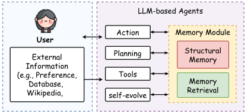
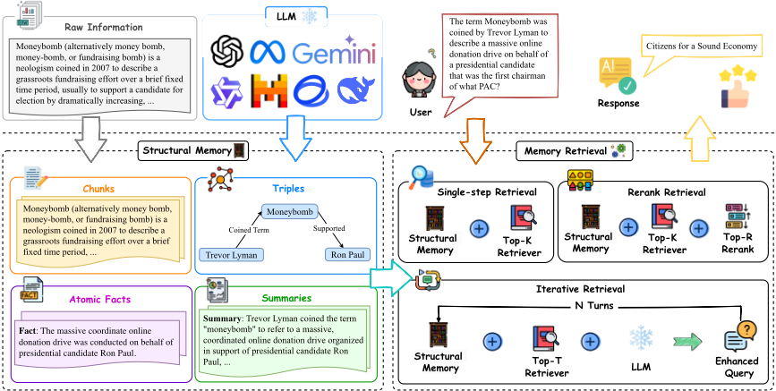
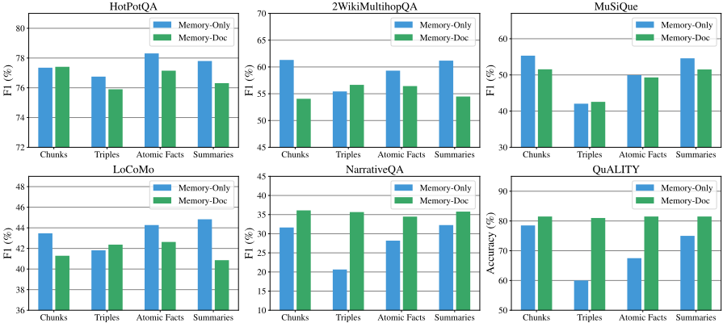
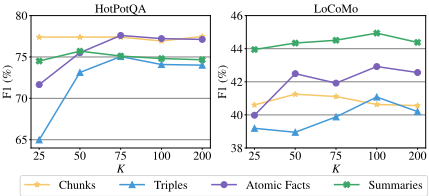
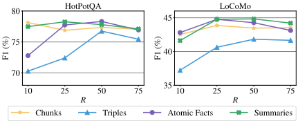
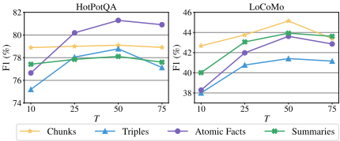
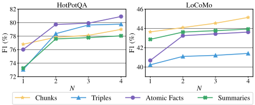
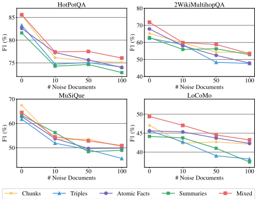
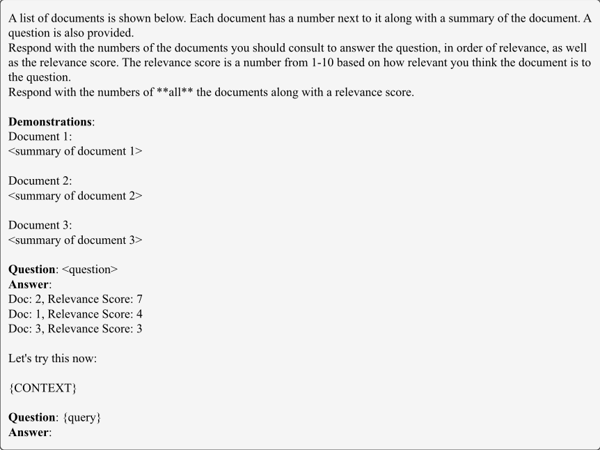
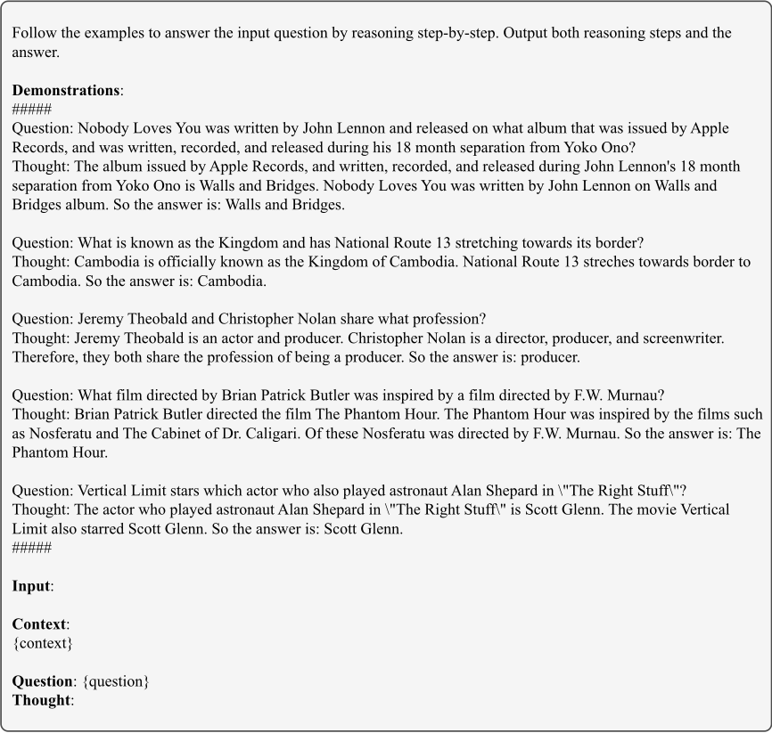

论 LLM Agent 的结构化记忆
该论文系统研究了 LLM Agent 记忆模块中'记忆结构'与'检索方法'两个设计维度对任务表现的影响。作者在多跳 QA、单跳 QA、对话理解、阅读理解四类任务共六个数据集上，对比了 chunks、knowledge triples、atomic facts、summaries 四种记忆结构及其混合形式（mixed memory），并配合 single-step retrieval、reranking、iterative retrieval 三种检索方法与 Memory-Only/Memory-Doc 两种答案生成策略进行统一评测。关键结论：混合记忆在各任务上表现最均衡且抗噪能力最强（iterative retrieval 下 HotPotQA F1 82.11%）；chunks/summaries 适合长上下文任务，triples/atomic facts 适合关系推理与精确问答；iterative retrieval 在多数任务上是最优检索方法，迭代 2-3 轮即可在效果与成本间取得平衡。对团队的知识库问答与 RAG 管线设计选型有直接参考价值。
LLM Agent 的记忆模块已有多种记忆结构（chunks、knowledge triples、atomic facts、summaries）被各自提出，但不同记忆结构在不同任务上的影响缺乏系统探索。论文要回答：哪种记忆结构最适合哪类任务，记忆检索方法如何影响 Agent 整体表现，以及各结构在噪声环境下的鲁棒性如何。
构建包含结构化记忆生成、记忆检索、答案生成三阶段的记忆模块评测框架：用 LLM 配合定制 prompt 将原始文档转换为 chunks、knowledge triples、atomic facts、summaries 四种结构化记忆及其并集（mixed memory）；检索侧对比 single-step retrieval（TopK 向量检索）、reranking（LLM 对候选记忆按相关性重排）与 iterative retrieval（LLM 迭代改写查询后多轮检索）；答案生成对比 Memory-Only（仅用检索到的记忆作上下文）与 Memory-Doc（用记忆定位并回溯原始文档）两种方式；并补充噪声文档注入实验与超参（K、R、T、N）敏感性分析。实验基于 GPT-4o-mini-128k、text-embedding-3-small 嵌入模型与 LangChain 向量存储。
混合记忆在 iterative retrieval 下于 HotPotQA 取得最高 F1 82.11%，在 2WikiMultihopQA 取得 68.15%
chunks 在 NarrativeQA 取得 F1 31.63%、在 QuALITY 取得准确率 78.5%（reranking 下）；summaries 在 NarrativeQA 取得 F1 32.26%
knowledge triples 在 2WikiMultihopQA（iterative retrieval 下）取得 F1 62.06%；atomic facts 在 HotPotQA 取得 F1 81.29%
reranking 在 LoCoMo 取得 F1 44.27%、NarrativeQA 取得 28.19%（atomic fact 记忆）；single-step retrieval 用 summary 记忆在 NarrativeQA 取得 F1 32.93%
超参敏感性：reranking 在较小高相关子集上更有效（HotPotQA chunks 在 R=10 达到峰值）；iterative retrieval 的迭代轮数 N 在 2-3 之间取得效果与资源消耗的最优平衡
噪声鲁棒性实验中，随噪声文档数增加，混合记忆在 HotPotQA 与 LoCoMo 上始终保持最高 F1，抗噪能力最强
据作者称是首个系统研究 LLM Agent 记忆结构与记忆检索方法组合影响的综合实证研究。区别于 HiAgent、Arigraph、ReadAgent/GraphReader 等各自提出单一记忆模块的已有工作，本文不提出新记忆模块，而是将已有记忆结构与检索方法置于统一框架、统一模型（GPT-4o-mini-128k）下做控制变量对比，并额外补充噪声鲁棒性与超参敏感性分析，给出'任务类型-记忆结构-检索方法'的匹配结论。
相关度级别：high
命中能力域：3.1 上下文工程与记忆 | 3.5 评测与可靠使用
理由：论文直接命中 3.1 上下文工程与记忆域的核心技术：Agent 记忆系统的结构设计（chunks/triples/atomic facts/summaries 及混合形式）与 RAG 检索策略（single-step/reranking/iterative retrieval）正是团队知识库问答与上下文组织管线的关键设计决策，论文给出的'任务-结构-检索'匹配结论可直接转化为工程选型依据。同时其统一评测协议、噪声鲁棒性测试方法与超参-成本权衡分析对 3.5 评测与可靠使用域有借鉴价值。团队聚焦'把模型用好'而非训练模型，这类实证结论与团队定位高度契合。
建议动作：深入精读并做内部分享
arXiv:2412.15266v1 [cs.CL] 2024年12月17日
Ruihong Zeng 1 ∗ , Jinyuan Fang 1 ∗ , Siwei Liu 2 † , Zaiqiao Meng 1 †
1 格拉斯哥大学（University of Glasgow） 2 阿伯丁大学（University of Aberdeen）
zengrh3@gmail.com j.fang.2@research.gla.ac.uk
siwei.liu@abdn.ac.uk
, , zaiqiao.meng@glasgow.ac.uk
记忆在使基于大语言模型（LLM）的智能体（Agent）能够进行复杂且长期交互（例如问答（QA）和对话系统）方面发挥着至关重要的作用。尽管已有多种记忆模块被提出用于这些任务，但不同记忆结构在不同任务中所产生的影响仍未得到充分探索。本文研究了记忆结构和记忆检索方法如何影响基于 LLM 的智能体的性能。具体而言，我们评估了四种类型的记忆结构，包括分块（chunks）、知识三元组（knowledge triples）、原子事实（atomic facts）和摘要（summaries），以及将这些成分组合起来的混合记忆。此外，我们还评估了三种广泛使用的记忆检索方法：单步检索（single-step retrieval）、重排序（reranking）和迭代检索（iterative retrieval）。在四个任务和六个数据集上开展的大量实验得出了以下关键见解：（1）不同的记忆结构各具优势，可针对特定任务进行定制；（2）混合记忆结构在噪声环境中展现出显著的韧性；（3）迭代检索在各种场景中始终优于其他方法。我们的研究旨在为基于 LLM 的智能体的记忆系统设计激发进一步的研究。1
大语言模型（Large Language Models, LLMs）（Minaee et al., 2024）凭借其卓越的能力在自然语言任务中受到了广泛关注。近期的进展显著加速了基于 LLM 的智能体的发展，相关研究主要聚焦于画像（profile）（Park et al., 2023; Hong et al.）、规划（planning）（Qian et al., 2024; Qiao et al., 2024）、行动（action）（Qin et al., 2023; Wang et al., 2024c）、自我演化（self-evolving）（Zhang et al., 2024a）以及记忆（memory）（Packer et al., 2023; Lee et al., 2024）。这些创新在多样化的应用领域中解锁了广泛的应用（Li et al., 2023; Wang et al., 2024b; Chen et al., 2024）。
* 同等贡献。
† 通讯作者。
1 所有代码和数据集均公开于：https: //github.com/zengrh3/StructuralMemory

支撑基于 LLM 的智能体有效性的一个基本要素是记忆模块。在认知科学中（Simon and Newell, 1971; Anderson, 2013），记忆是人类认知的基石，它使过去经验得以存储、检索和调用，从而支持策略性思考与决策。类似地，记忆模块对基于 LLM 的智能体至关重要：它促进对过往交互的保留与组织，支持复杂推理能力，例如多跳问答（multi-hop question answering, QA）（Li et al., 2024a; Lee et al., 2024），并确保用户交互的一致性与连续性（Nuxoll and Laird, 2007）。
在基于 LLM 的智能体中开发有效的记忆模块通常涉及两个关键组成部分：结构化记忆生成与记忆检索方法（Wang et al., 2024a; Zhang et al., 2024b）。在智能体所使用的各种记忆结构中，分块（chunks）（Hu et al., 2024）、知识三元组（knowledge triples）（Anokhin et al., 2024）、原子事实（atomic facts）（Li et al., 2024a）和摘要（summaries）（Lee et al., 2024）最为常见。例如，HiAgent（Hu et al., 2024）利用子目标作为记忆分块来管理基于 LLM 的智能体的工作记忆，确保任务的连续性与连贯性；而 Arigraph（Anokhin et al., 2024）采用知识三元组，将语义记忆与情景记忆相结合以存储事实性和细节信息，使其适用于复杂推理任务。与此同时，ReadAgent（Li et al., 2024a）以摘要的方式将记忆片段压缩为 gits 记忆，并将其组织在一个结构化的记忆目录中。
在回顾了上述记忆结构之后，一个重要但尚未被充分探索的问题随之而来：哪些记忆结构最适合特定任务，它们各自的特点又如何影响基于 LLM 的智能体的性能？这一问题与人类将记忆组织为不同形式的方式相呼应，例如用于回忆事件的情景记忆（episodic memory）和用于理解关系的语义记忆（semantic memory）（Simon and Newell, 1971; Anderson, 2013）。每种形式都有其独特的用途，使人类能够灵活而精准地应对各种挑战。此外，人类依赖有效的检索过程来访问相关记忆，从而确保准确回忆过去的经验以解决问题。这凸显了联合探索记忆结构与检索方法的必要性，以提升基于 LLM 的智能体的推理能力和整体效能。
为弥合这一空白，我们系统地探索了各种记忆结构和检索方法对基于 LLM 的智能体的影响。具体而言，我们评估了现有的四种记忆结构：分块（chunks）（Hu et al., 2024）、知识三元组（knowledge triples）（Anokhin et al., 2024）、原子事实（atomic facts）（Li et al., 2024a）以及摘要（summaries）（Li et al., 2024a）。在此基础上，我们探索了混合记忆结构的潜力，即组合多种类型的记忆，以检验它们的互补特性能否提升性能。此外，我们评估了这些记忆结构对噪声的鲁棒性，因为理解它们在此类条件下的可靠性对于确保其在多样任务中的有效性至关重要。进一步地，我们研究了三种记忆检索方法，包括单步检索（single-step retrieval）（Packer et al., 2023）、重排序（reranking）（Gao et al., 2023a）和迭代检索（iterative retrieval）（Li et al., 2024b），以揭示检索方法与记忆结构的不同组合如何影响整体性能。
本工作的主要贡献可总结如下：（1）我们首次全面研究了基于 LLM 的智能体中记忆结构与记忆检索方法的影响，涵盖四个任务上的六个数据集：多跳问答（multi-hop QA）、单跳问答（single-hop QA）、对话理解（dialogue understanding）和阅读理解（reading comprehension）。（2）我们的发现表明，混合记忆在多样任务中始终取得均衡且具有竞争力的性能。分块和摘要在涉及大量且冗长上下文的任务（例如阅读理解和对话理解）中表现出色，而知识三元组和原子事实在多跳问答和单跳问答中对于关系推理和精确性尤为有效。此外，混合记忆对噪声展现出显著的韧性。（3）迭代检索在大多数任务（如多跳问答、对话理解和阅读理解）中脱颖而出，是最有效的记忆检索方法。
大语言模型（LLM）的出现使其成为迈向通用人工智能（AGI）的变革性一步（Wang et al., 2024a），并为基于LLM的Agent的开发提供了强大的能力（Xi et al., 2023; Xu et al., 2024）。当前该领域的研究主要聚焦于Agent规划（Wang et al., 2023; Yao et al., 2024; Qian et al., 2024; Qiao et al., 2024）、反思机制（Shinn et al., 2024; Zhang et al., 2024a）、外部工具利用（Qin et al., 2023; Wang et al., 2024c）、自我进化能力（Zhang et al., 2024a）以及记忆模块（Hu et al., 2024; Lee et al., 2024）。
记忆模块是基于LLM的智能体的基础，使其能够组织知识、检索相关信息，并利用先前经验完成推理任务（Zhang et al., 2024b）。记忆模块中广泛采用的记忆结构包括记忆块（chunks）（Packer et al., 2023; Liu et al., 2023; Hu et al., 2024）、知识三元组（Anokhin et al., 2024）、原子事实（Li et al., 2024a）以及摘要（Lee et al., 2024）。例如，HiAgent（Hu et al., 2024）将子目标作为记忆块纳入其中，以在多次交互之间保持任务的连续性与连贯性。另一方面，GraphReader（Li et al., 2024a）则采用原子事实将记忆块压缩为更细粒度的细节，为智能体提供高度细粒化的信息，从而提高多跳问答任务的精确度。在本文中，我们研究各种记忆结构如何影响基于LLM的智能体的性能。

记忆检索方法是记忆模块的另一个关键组成部分，它使基于LLM的智能体能够检索相关记忆以支持高级推理。为此，基于LLM的智能体通常采用检索增强生成（RAG）（Lewis et al., 2020; Fang et al., 2024），即先检索出相关记忆，再利用LLM基于这些记忆生成答案。在这种设置下，检索到的记忆被前置到查询之前，作为LLM的输入以生成响应（Ram et al., 2023）。最直接的检索方法是单步检索（single-step retrieval）（Packer et al., 2023; Zhong et al., 2024），其目标是为查询找出TopK个最相关的记忆。此外，重排序（reranking）（Gao et al., 2023a; Ji et al., 2024）利用LLM的语言理解能力对检索到的记忆进行优先级排序，而迭代检索（iterative retrieval）（Li et al., 2024b; Shi et al., 2024）则侧重于重新表述查询以提高检索准确度。这些创新使记忆检索更具适应性、与查询更加一致，从而在多样且复杂的任务中保持有效性能。在本文中，我们探讨检索方法与记忆结构的不同组合如何影响整体性能。
图 2 展示了基于 LLM 的 Agent 中记忆模块的总体概览，重点突出了三个关键组件：结构化记忆生成（Structural Memory Generation）、记忆检索方法（Memory Retrieval Methods）和答案生成（Answer Generation）。本节首先在 § 3.1 中介绍结构化记忆生成。接着，我们在 § 3.2 中介绍记忆检索方法。最后，§ 3.3 讨论答案生成方法。
结构化记忆生成使 Agent 能够将原始文档组织成结构化表示。通过将非结构化文档 D q 转换为结构化记忆 M q，Agent 便获得了更有效地存储、检索和推理信息的能力。在本工作中，我们探索了四种不同的结构化记忆形式：分块 C q、知识三元组 T q、原子事实 A q 或摘要 S q。每种结构化记忆的生成过程详述如下：
分块（C q）。分块（Gao et al., 2023b）是基于 LLM 的 Agent 中广泛使用的一种结构化记忆形式。每个分块表示文档中一段连续的文本，通常被限制为固定的 token 数量 L。形式化地，原始文档 D q 可以被划分为一系列分块，定义如下：C q ( D q ) = { c 1 , c 2 , . . . , c j }，其中每个分块 c j 最多包含 L 个 token。
定义：分块是来自文档的连续、固定长度的文本片段。示例：生成的分块 C q：
(1) Moneybomb（也可写作 money bomb、money-bomb 或 fundraising bomb）是 2007 年创造的一个新词；
(2) 用于描述在短暂固定时间段内开展的草根筹款活动。
知识三元组（T q）。知识三元组表示一种结构化记忆形式，用于捕获实体之间的语义关系。每个三元组由三个部分组成：头实体（head entity）、关系（relation）和尾实体（tail entity），以 ⟨ head ; relation ; tail entity ⟩ 的格式表示。遵循先前的工作（Anokhin et al., 2024; Fang et al., 2024），原始文档 D q 由 LLM 在定制提示 P T 的引导下进行处理，以生成一组语义三元组 T q。生成过程可以形式化定义为：T q = LLM ( D q , P T ) 。
原子事实（Atomic Facts，A q）。原子事实是最小的、不可分割的信息单元，以简洁句子的形式呈现，用于捕捉关键细节。它们代表了一种细粒度的结构化记忆形式，通过保留关键实体、动作和属性来简化原始文档。遵循 Li et al. (2024a) 的做法，原子事实由 LLM 在定制提示 P A 的引导下从原始文档 D q 中生成，形式化表示为：A q = LLM ( D q , P A ) 。
定义：原子事实是最小的、不可分割的信息单元。
示例：生成的原子事实 A q：(1) Moneybomb 也被称为 money bomb、money-bomb 或 fundraising bomb；(2) Moneybomb 是一个新造词。
摘要（Summaries，S q）。摘要提供对文档的精炼而全面的描述，既捕捉全局内容又保留关键细节。遵循 Lee et al. (2024) 的做法，摘要由 LLM 在定制提示 P S 的引导下从原始文档 D q 中生成，形式化表示为：S q = LLM ( D q , P S ) 。
给定已生成的结构化记忆 M q ，我们采用一种记忆检索方法来识别并整合与查询 q 最相关的支持记忆 M r ⊂ M q 。若缺少这一步骤，智能体将需要处理所有可用记忆，从而因无关信息导致效率低下和潜在的不准确性。我们的研究主要关注三种检索方法：单步检索（single-step retrieval）（Robertson et al., 2009; Rubin et al., 2022）、重排序（reranking）（Gao et al., 2023a; Ji et al., 2024）和迭代检索（iterative retrieval）（Li et al., 2024b; Shi et al., 2024）。每种记忆检索方法的细节概述如下：
单步检索（Single-step Retrieval）。在单步检索过程中，目标是识别出与查询 q 最相关的 TopK 条记忆 M r 。该过程形式化定义为：M r = Retriever ( q, M q , K ) ，其中 Retriever（Robertson et al., 2009; Rubin et al., 2022）作为核心组件。
重排序（Reranking）。在重排序过程中（Gao et al., 2023a; Dong et al., 2024），初始检索器首先选出由 TopK 条记忆组成的候选集 M i ，随后由一个以 P Rerank 为提示的大语言模型（LLM）根据相关性得分对其进行重排序。从重排序后的列表中，按相关性得分降序选出的 TopR 条记忆 M r 被确定为最相关的记忆。该步骤通过利用 LLM 强化查询与记忆之间的关联、过滤掉无关记忆，并为查询优先排列最相关的记忆，从而提升检索精度。该过程形式化定义为：M r = LLM ( q, M i , R, P R ) ，其中 M i = Retriever ( q, M q , K ) 。
迭代检索（Iterative Retrieval）。迭代检索方法（Gao et al., 2023b）从初始查询 q 0 = q 开始，检索出 TopT 条最相关的结构化记忆 M j 。这些检索到的记忆通过一个以 P Refine 为提示的 LLM 用于对查询进行精炼。该过程重复进行 N 次迭代，不断精炼查询，最终得到对检索相关记忆具有信息量的最终版本 q N 。形式上，迭代检索过程可定义如下：q j = LLM ( M j , P Refine ) ，其中 M j = Retriever ( q j - 1 , M q , T ) 。经过 N 次迭代后，最终精炼得到的查询 q N 被用于检索 TopK 条最相关的记忆以生成答案。该步骤可表示为：M r = Retriever ( q N , M q , K ) 。提示 P Rerank 和 P Refine 的详细内容见附录 B。
最后，Agent 利用 LLM 基于检索到的记忆来生成答案。为实现这一目标，我们提出了两种答案生成方法。在第一种方法（称为 MemoryOnly）中，检索到的记忆 M r 被直接用作生成答案的上下文。第二种方法（称为 Memory-Doc）则利用检索到的记忆从 D q 中定位其对应的原始文档。这些文档随后作为答案生成的上下文，为 Agent 提供更详细、上下文更丰富的信息。
我们在涵盖四项任务的六个数据集上开展实验。对于多跳长上下文问答（QA）数据集，我们使用 HotPotQA（Yang et al., 2018）、2WikiMultihopQA（Ho et al., 2020）和 MuSiQue（Trivedi et al., 2022）进行实验。单跳长上下文 QA 任务则采用来自 Longbench（Bai et al., 2023）的 NarrativeQA（Koˇ cisk` y et al., 2018）进行评估。此外，我们利用 LoCoMo 数据集（Maharana et al., 2024）开展基于对话的长上下文 QA 任务，而 QuALITY（Pang et al., 2022）数据集则用于阅读理解 QA 任务²。
为评估问答（QA）性能，我们遵循先前工作（Li et al., 2024a）的做法，对 HotPotQA、2WikiMultihopQA、MuSiQue、NarrativeQA 和 LoCoMo 数据集采用精确匹配（Exact Match, EM）分数和 F1 分数等标准指标。对于 QuALITY，我们遵循（Lee et al., 2024）中的方法，使用准确率作为评估指标，其中 25% 表示随机水平。
在我们的实验中，我们使用 GPT-4o-mini-128k，温度参数设置为 0.2。输入窗口设置为 4 k tokens，而最大分块（chunk）大小最多可达 1 k tokens。对于文本嵌入（text embedding），我们采用 OpenAI 的 text-embedding-3-small 模型 3，并使用 LangChain (Chase, 2022) 存储向量化后的记忆。
发现 1：混合记忆（mixed memories）带来更均衡的性能。表 1 所示的结果揭示了各种记忆结构对任务性能影响的关键洞见：（1）混合记忆始终优于其他记忆结构。这在迭代检索（iterative retrieval）下尤为明显，混合记忆在 HotPotQA 上取得了 82.11% 的最高 F1 分数，在 2WikiMultihopQA 上取得了 68.15% 的最高 F1 分数。（2）分块（chunks）在需要在简洁上下文与全面上下文之间取得平衡的任务中表现出色，这在具有长上下文的数据集中得到体现。其证据是：在重排序（reranking）下，分块在 NarrativeQA 上取得了 31.63% 的 F1 分数，在 QuALITY 上取得了 78.5% 的准确率。摘要（summaries）将大段上下文进行浓缩，对于需要抽象能力的任务十分有效，这体现在其在 NarrativeQA 上具有竞争力的 32.26% F1 分数以及在 LoCoMo 上的稳健表现。（3）知识三元组（knowledge triples）和原子事实（atomic facts）在关系推理和精确性方面尤为有效。在迭代检索下，知识三元组在 2WikiMultihopQA 上取得了 62.06% 的 F1 分数，而原子事实在 HotPotQA 上取得了 81.29% 的 F1 分数。这些发现强调了根据特定任务需求定制记忆结构的重要性，并表明在混合记忆中整合互补的记忆类型能够显著提升跨任务性能。
2 关于数据集的更多细节和统计数据见附录 A。
3 https://platform.openai.com/docs/guides/ embeddings/
| Memory Structure.Memory Structure | HotPotQA.EM | HotPotQA.F1 | 2WikiMultihopQA.EM | 2WikiMultihopQA.F1 | MuSiQue.EM | MuSiQue.F1 | NarrativeQA.EM | NarrativeQA.F1 | LoCoMo.EM | LoCoMo.F1 | QuALITY.ACC |
|---|---|---|---|---|---|---|---|---|---|---|---|
| Full Content | 55.50 | 75.77 | 44.00 | 54.33 | 36.00 | 51.60 | 7.00 | 24.99 | 13.61 | 41.82 | 81.50 |
| Single-step Retrieval | Single-step Retrieval | Single-step Retrieval | Single-step Retrieval | Single-step Retrieval | Single-step Retrieval | Single-step Retrieval | Single-step Retrieval | Single-step Retrieval | Single-step Retrieval | Single-step Retrieval | Single-step Retrieval |
| Chunks | 61.50 | 76.93 | 43.50 | 59.17 | 35.50 | 54.45 | 13.50 | 29.78 | 9.95 | 40.63 | 76.00 |
| Triples | 59.50 | 74.09 | 44.50 | 60.82 | 31.00 | 50.13 | 11.50 | 22.04 | 8.42 | 41.08 | 61.50 |
| Atomic Facts | 62.50 | 77.22 | 39.50 | 58.63 | 30.50 | 51.31 | 13.50 | 27.49 | 9.42 | 42.92 | 71.50 |
| Summaries | 57.00 | 74.81 | 42.00 | 57.21 | 34.00 | 52.83 | 16.50 | 32.93 | 10.99 | 44.94 | 76.00 |
| Mixed | 60.00 | 77.10 | 48.50 | 65.25 | 33.00 | 51.65 | 14.50 | 29.86 | 10.47 | 44.73 | 78.00 |
| Reranking | Reranking | Reranking | Reranking | Reranking | Reranking | Reranking | Reranking | Reranking | Reranking | Reranking | Reranking |
| Chunks | 63.00 | 77.35 | 45.00 | 61.31 | 37.00 | 55.32 | 16.00 | 31.63 | 9.95 | 43.47 | 78.50 |
| Triples | 61.00 | 76.75 | 43.50 | 55.43 | 26.50 | 42.05 | 10.00 | 20.65 | 8.83 | 41.82 | 60.00 |
| Atomic Facts | 63.00 | 78.31 | 40.50 | 59.31 | 28.50 | 49.95 | 14.00 | 28.19 | 8.90 | 44.27 | 67.50 |
| Summaries | 61.00 | 77.80 | 45.00 | 61.18 | 35.50 | 54.59 | 16.00 | 32.26 | 12.04 | 44.83 | 75.00 |
| Mixed | 65.00 | 78.58 | 45.50 | 61.77 | 34.00 | 52.45 | 11.98 | 28.02 | 9.42 | 44.51 | 77.50 |
| Iterative Retrieval | Iterative Retrieval | Iterative Retrieval | Iterative Retrieval | Iterative Retrieval | Iterative Retrieval | Iterative Retrieval | Iterative Retrieval | Iterative Retrieval | Iterative Retrieval | Iterative Retrieval | Iterative Retrieval |
| Chunks | 63.00 | 79.10 | 46.50 | 62.13 | 37.00 | 56.78 | 14.50 | 30.88 | 10.47 | 45.14 | 77.00 |
| Triples | 64.00 | 78.78 | 47.50 | 62.06 | 38.00 | 55.93 | 10.50 | 21.67 | 9.47 | 41.41 | 60.50 |
| Atomic Facts | 65.50 | 81.29 | 44.00 | 63.89 | 34.50 | 57.55 | 14.50 | 28.28 | 9.95 | 43.62 | 67.50 |
| Summaries | 60.50 | 78.11 | 46.50 | 62.35 | 33.50 | 53.12 | 17.00 | 31.79 | 12.04 | 43.93 | 75.00 |
| Mixed | 67.00 | 82.11 | 51.00 | 68.15 | 39.00 | 61.38 | 12.50 | 28.36 | 7.85 | 45.25 | 79.50 |
| Memory Structure.Memory Structure | HotPotQA.EM | HotPotQA.F1 | 2WikiMultihopQA.EM | 2WikiMultihopQA.F1 | MuSiQue.EM | MuSiQue.F1 | NarrativeQA.EM | NarrativeQA.F1 | LoCoMo.EM | LoCoMo.F1 | QuALITY.ACC |

发现 2：迭代检索（iterative retrieval）是最优的检索方法。表 1 中的结果表明，检索方法对性能有显著影响：(1) 迭代检索始终优于其他方法，在大多数数据集上取得了最高分数。值得注意的是，在使用混合记忆时，迭代检索在 HotPotQA 上取得了 82.11% 的 F1 分数，在 2WikiMultihopQA 上取得了 68.15% 的 F1 分数，展示了其通过迭代优化查询以提升准确性的能力。(2) 重排序（reranking）在中等复杂度的数据集上表现出强劲性能。例如，在使用原子事实记忆时，它在 LoCoMo 上取得了 44.27% 的 F1 分数，在 NarrativeQA 上取得了 28.19% 的 F1 分数。(3) 相比之下，单步检索（single-step retrieval）在需要较少上下文整合的任务中表现具有竞争力。使用摘要记忆时，它利用抽象来提取连贯信息，在 NarrativeQA 上取得了 32.93% 的 F1 分数。这些发现强调了使检索机制与任务需求相匹配的重要性，而迭代检索在推理任务中表现尤为出色。

5.3 答案生成方法的影响 发现 3：需要广泛上下文（Extensive Context）的任务更倾向于 Memory-Doc，而注重精确性的任务则受益于 Memory-Only。如图 3 所示，该图比较了二者在各个数据集上的性能。通过检索到的记忆来获取文档能够提供更全面的理解，就像人类将即时回忆与更广泛的上下文相结合来解读复杂叙事一样。相比之下，对于涉及多跳推理和对话理解的数据集，例如 HotPotQA 和 LoCoMo，Memory-Only 方法被证明是更有效的策略。这些发现表明，需要广泛上下文的任务受益于 Memory-Doc 方法，该方法纳入更广泛的文档级信息以生成更丰富的回答。另一方面，优先考虑精确性的任务更适合 Memory-Only 方法，从而确保检索的聚焦性与准确性。
Effect of Number of Retrieved Memories K . We first evaluate the impact of K in single-step retrieval, with a limit of K = 200 due to computational resource limitations. As depicted in Figure 4, in HotPotQA, chunks demonstrate consistent performance, stabilizing around 77% across all K values. In LoCoMo, the chunks show moderate gains up to K = 50 , whereas triples, atomics, and


summaries improve up to K = 100 but then declined at K = 200 , likely due to noise introduced by retrieving excessive memories. These findings indicate that the optimal K depends on both the dataset and memory structure. While moderate K values generally enhance performance, excessively large values can introduce irrelevant information, leading to a degraded performance.
Effect of Number of Reranked Memories R . To evaluate the impact of R in reranking, we investigate performance across a range of values, with a maximum R of 75 due to computational cost constraints, while fixing K at 100. As depicted in Figure 5, the results highlight that increasing the number of reranked memories does not always lead to better performance. For instance, chunks achieve the highest F1 score at R = 10 in HotPotQA, with a subsequent decline in performance beyond R = 50 . This pattern is consistent with triples and atomic facts, indicating that selecting a smaller number of highly relevant memories can outperform retrieving and reranking larger sets, which often introduces noise. A similar trend can be observed in LoCoMo. These findings suggest that reranking is more effective when it focuses on a smaller subset of highly relevant memories.
Effect of Number of Retrieved Memories T on Each Iteration . We first investigate performance across a range of values of T using iterative retrieval, with a maximum T of 75 and N of 4 due to computational cost constraints while keeping K fi xed at 100. As illustrated in Figure 6, increasing the number of retrieved memories per iteration generally improves performance across datasets, though the gains diminish beyond a certain threshold. For instance, in HotPotQA, atomic facts achieve an F1 score of approximately 81% at T = 50 , with minimal additional gains from increasing T further. Similarly, in LoCoMo, chunks improve up to T = 50 before declining at T = 75 . These results indicate that while increasing T can enhance query refinement and performance, excessively large T values may introduce noise, ultimately reducing effectiveness.

迭代轮数 N 的影响。接下来，我们考察迭代轮数 N 的影响，并将检索到的记忆数量 T 固定为 50。如图 6 所示，结果表明，增大 N 起初能显著提升性能，但随着 N 继续增大，提升幅度逐渐减小。对于 HotPotQA，三元组和摘要在 N = 1 到 N = 3 之间均有显著提升，此后改进变得微乎其微。就 LoCoMo 而言，三元组、原子事实和摘要在 N = 3 时达到峰值，此后不再增长。这些结果表明，中等数量的迭代轮数（通常在 2 到 3 之间）能够实现最优的性能提升，在最大化效果与最小化资源开销之间取得了平衡。
最后，我们使用固定 K = 100 的单步检索，评估了各种记忆结构在噪声水平不断提升情况下的鲁棒性。如图 8 所示，随着噪声文档数量的增加，所有记忆结构的性能均出现下降。在 HotPotQA 上，混合记忆始终取得最高的 F1 分数，展现出对噪声的卓越抗性。尽管三元组和摘要表现出相近的下降速率，但文本块（chunks）的下降较为缓慢，在噪声文档数量增加时仍能保持有竞争力的 F1 分数。LoCoMo 中也呈现出类似的模式。这些发现揭示了混合记忆结构的鲁棒性，它在各数据集上始终优于其他结构，因而是噪声环境中最有效的选择。

在本文中，我们首次全面研究了结构化记忆与记忆检索方法对基于大语言模型（LLM）的智能体的影响，旨在确定最适合特定任务的记忆结构，并探究检索方法如何影响性能。本研究得出了若干关键发现：（1）混合记忆始终提供均衡的性能。文本块（chunks）和摘要在涉及长上下文的任务（如阅读理解和对话理解）中表现优异，而知识三元组（knowledge triples）和原子事实（atomic facts）则在多跳与单跳问答（QA）中对关系推理和精确性十分有效。（2）混合记忆对噪声也展现出显著的鲁棒性。（3）迭代检索（iterative retrieval）脱颖而出，成为最有效的记忆检索方法，在多跳问答、对话理解和阅读理解等任务中始终表现更优。尽管这些发现提供了宝贵的见解，但仍需进一步研究以探索记忆如何影响自我进化（self-evolution）和社会模拟（social simulation）等领域，这凸显了研究结构化记忆与检索技术如何支持这些应用的重要性。
我们在本工作中识别出以下局限性：（1）我们的实验仅限于多跳问答（multi-hop QA）、单跳问答（single-hop QA）、对话理解和阅读理解等任务，这限制了我们的发现对自我进化智能体（self-evolving agents）或社会模拟等其他复杂领域的适用性。研究记忆结构和检索方法在这些主题中的作用可以提供更广泛的见解；（2）对记忆鲁棒性的评估主要考虑了随机文档噪声，而其他具有挑战性的噪声类型（如无关信息或矛盾信息）尚未得到探索。在未来的研究中考察这些额外的噪声，可以更全面地理解记忆的韧性；（3）受计算资源限制，我们限制了记忆检索方法中的超参数范围（例如 K、R、T、N）。在未来的研究中扩展这些范围，可以更深入地洞察它们对性能的影响。
我们在以下六个数据集上开展了涵盖四类任务的实验，包括多跳问答（multi-hop QA）、单跳问答（single-hop QA）、对话理解和阅读理解。各数据集的统计信息见表 2。
| Task | Dataset | Avg. # Tokens | # Samples |
|---|---|---|---|
| Multi-hop QA | HotpotQA | 1,362 | 200 |
| Multi-hop QA | 2WikiMultihopQA | 985 | 200 |
| Multi-hop QA | MuSiQue | 2,558 | 200 |
| Single-hop QA | NarrativeQA | 24,009 | 200 |
| Dialogue Understanding | LoCoMo | 24,375 | 191 |
| Reading Comprehension | QuALITY | 4,696 | 200 |
| Task | Dataset | Avg. # Tokens | # Samples |
在本节中，我们给出实验中所使用的提示（prompts），并在相应小节中提供详细描述。
用于从文档中提取知识三元组的提示如图 9 所示。
用于生成文档摘要的提示如图 10 所示。
用于从文档中生成原子事实的提示如图 11 所示。
用于对检索到的记忆进行重排序的提示如图 12 所示。
用于迭代式查询细化的提示如图 13 所示。
你现在是一名智能助手，任务是从上下文中细致地提取关键要素与原子事实。
Peter Dickson（生于1957年6月23日），是一位英国配音艺术家。他最为人熟知的是E4的配音，并且他是《The X Factor》、《Britain's Got Talent》、《The Price Is Right》、《Family Fortunes》、《All Star Mr \& Mrs》、《Live at the Apollo》、Michael McIntyre's Comedy Roadshow 以及 Chris Moyles' Quiz Night 的品牌声音。

